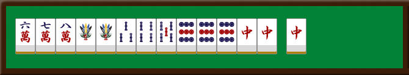
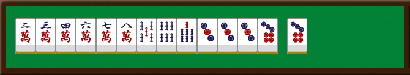
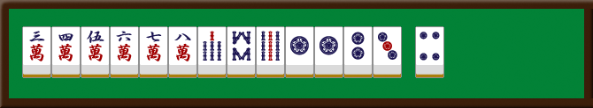

麻雀の世界
麻雀は
おもしろい
麻雀の魅力
【麻雀における運の役割】
麻雀は運要素が強いが、運を活かす判断力や守備力などの実力も重要。
麻雀は運要素が強いが、運を活かす判断力や守備力などの実力も重要。
【麻雀における戦略性】
手作り、点数計算、相手の読みなど多様な判断が必要で、高い戦略性が求められる。
手作り、点数計算、相手の読みなど多様な判断が必要で、高い戦略性が求められる。
【麻雀におけるコミュニケーション】
会話なしでも相手の意図を読む必要があり、非言語的な高度なコミュニケーションが求められる。
会話なしでも相手の意図を読む必要があり、非言語的な高度なコミュニケーションが求められる。
役紹介
門前で聴牌し、リーチ宣言で成立する基本役。

1,9字牌を使わず、2～8の数牌だけで作る役。

順子構成で、役牌を使わないリャンメン待ちの役。

プロ紹介
麻雀プロリーグ「Mリーグ」で活躍する選手たちを紹介します。

堀 慎吾
堀慎吾は新潟県出身のプロ雀士で、Mリーグ・KADOKAWAサクラナイツ所属。冷静な戦略と鋭い読みを武器に、攻守のバランスに優れた打ち筋を展開する。勝負所では大胆に攻めきる強さも持っている。別名「小さな巨人」

醍醐 大
醍醐大は千葉県出身のプロ雀士で、Mリーグ・セガサミーフェニックス所属。緻密な読みと独創的な打牌で、アガリ率を高めつつ放銃を抑えるスタイル。24-25シーズンには逆転トップでMVPを獲得し、存在感を示した。別名「先切り十段」

瑞原 明奈
瑞原明奈は長崎出身の女流プロ雀士で、Mリーグ・U-NEXT Pirates所属。論理と大胆さを融合させた「ゴリラ麻雀」が持ち味で、高成績を残す実力派。過去にMVPも獲っている。別名「気高き女海賊」